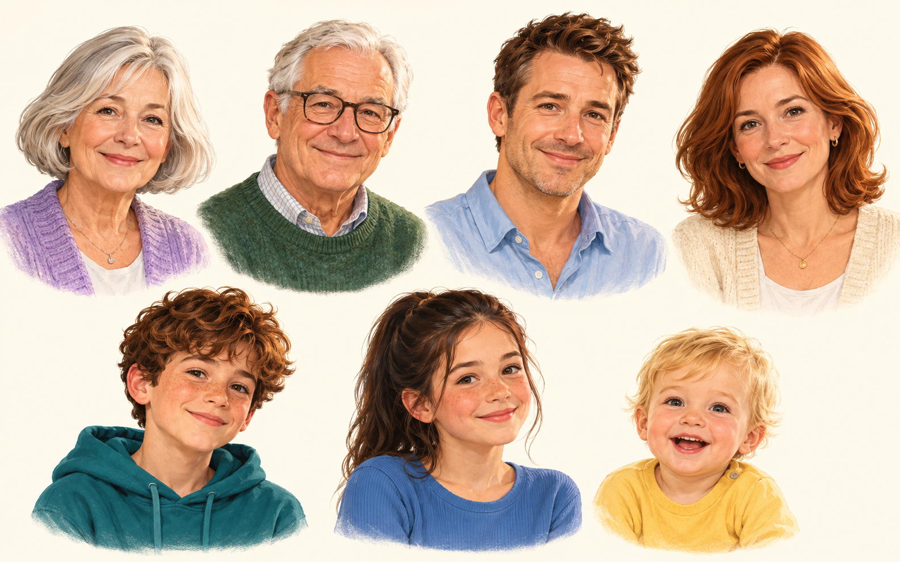
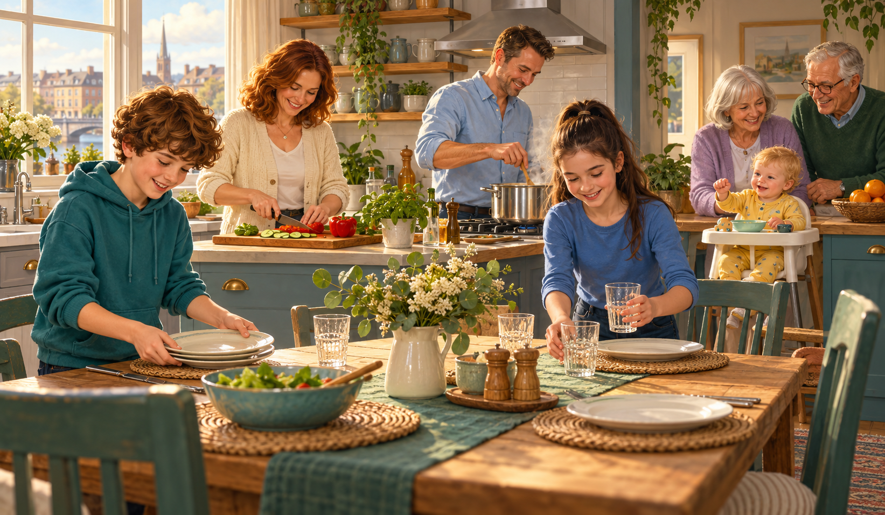
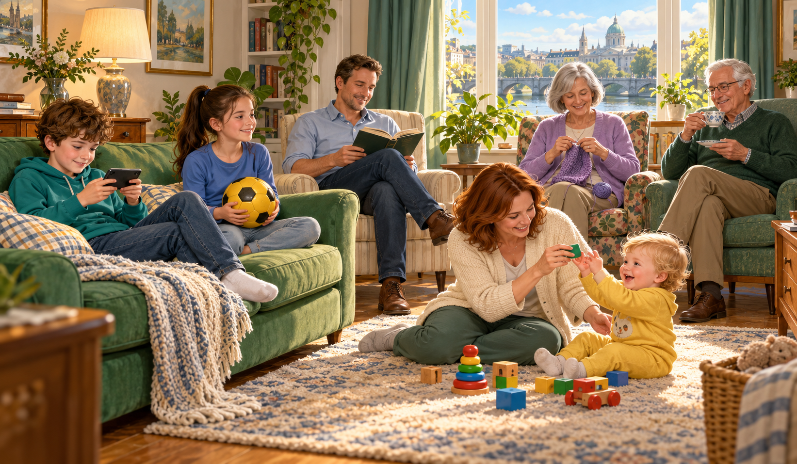
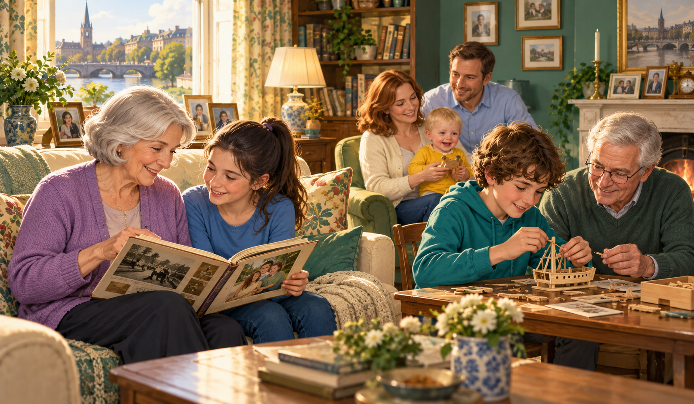
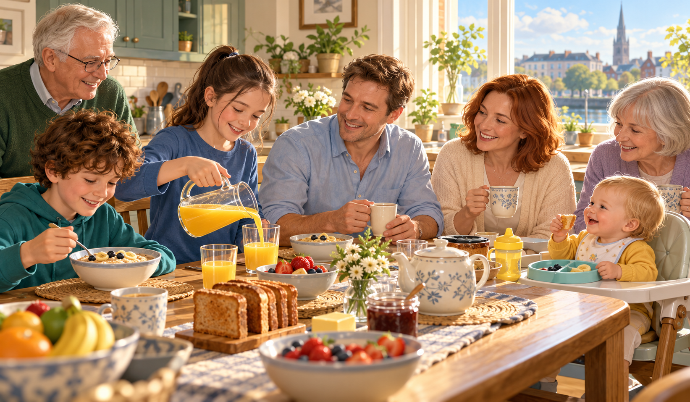
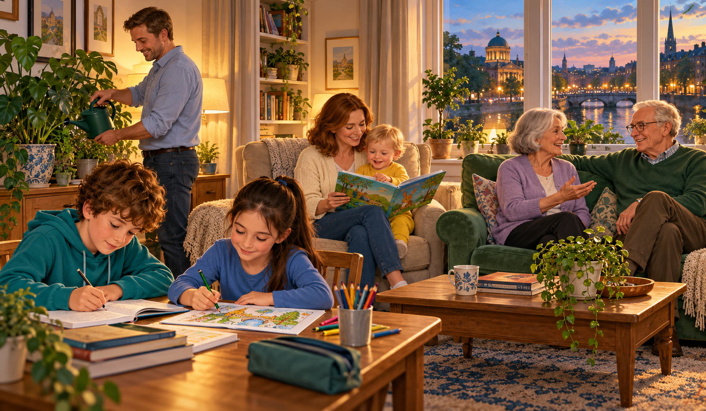

Today you master Present Simple, Present Continuous and a preview of Present Perfect — then meet the family: a twin sister, a baby brother, grandparents, aunt, uncle and cousin.
Before we meet Tomás, say three things about you. Use these ready sentence frames:
My name is Zhenya.I'm thirteen years old.I live in Moscow.Tip: say the sentence out loud before you type it. Listening + speaking = memory glue.
Use: facts, routines, habits. Signal: every day, usually, always, never, on Mondays, twice a week.
Form:
I live, we play, they go-s: he lives, she plays, it goesdoes, goes, kisses, washes, watches, mixesstudy → studies, carry → carriesNegative: do not (don't) / does not (doesn't) + base verb
Question: Do you ...? / Does she ...?
Short answers: Yes, I do. · No, she doesn't.
Use: now, at this moment, around now. Signal: now, right now, at the moment, today, this week, Look!, Listen!.
Form: am / is / are + verb-ing
am workingis workingare workingSpelling -ing:
run → running (double consonant)make → making (drop silent -e)lie → lying (-ie → -y)Negative: am not / isn't / aren't + V-ing
Question: Am I ...? / Is she ...? / Are they ...?
Signal words:
every day, always, usually, often, sometimes, never, on Mondaysnow, right now, at the moment, today, this week, Look!, Listen!Example contrast:
study English every day. (habit → Simple)am studying English now. (right now → Continuous)works in a hospital. (her job → Simple)is working today. (today → Continuous)State verbs — не используем в Continuous: like, love, hate, want, need, know, understand, remember, see, hear, have (= own).
Use: experience in your life ("I have been to London"), result now ("She has broken her leg").
Form: have / has + V3 (past participle)
have visitedhas visitedV3 для A1-глаголов: been, seen, done, had, made, gone, visited, met, bought.
Negative: have not (haven't) / has not (hasn't) + V3
Question: Have you ever ...? / Has she ever ...?
Key markers: ever, never, already, yet, just.
What do you do on Sundays?
I usually visit my grandma.
What are you doing right now?
I 'm helping my mum.
Have you ever been to Dublin?
Yes, I have! Last summer.
Every family has these roles. Tap a card to see the example on the back. Then try the memory game below.
mother / mum — мама · father / dad — папаsister · brother · siblings — all your brothers & sistersgrandmother / grandma · grandfather / grandpaaunt · uncle · cousinparents — mum + dad together

These are the words you'll meet in every English book, test and story about families. They are easy — most of them are only one word.
grandparents — grandma + grandpa togetherhusband · wife · son · daughterchildren · child · babytwins — brothers or sisters born on the same dayniece · nephew — your sister's/brother's childrenonly child — a child with no brothers or sistersLook at the title and answer in your head (not out loud yet):

Tomás is eleven years old and he lives in a small blue house in Dublin, Ireland. His mother is Eva. She is a chef and she works in a tiny restaurant near the river. Tomás's father is Patrick. Patrick is a firefighter. He is tall and brave.
Tomás has got a twin sister. Her name is Clara. Clara and Tomás are both eleven, but Clara is three minutes older — and she never forgets to say it! Clara loves football and she plays for her school team every Saturday.
Last summer the family had a new baby boy — Finn. Finn is six months old now. He has one little tooth and he smiles all day. Tomás's grandparents live in Galway, by the sea. Grandma Edith grows big red tomatoes in a greenhouse. Grandpa Jack is a fisherman and he brings home fresh fish every Friday.

Tomás has also got an aunt — Aunt Niamh — and an uncle called Sean. They have got one son, Oisín. Oisín is thirteen and he plays drums in a loud school band. The family is big, noisy and very happy.

Tomás shows a short family video to his new friend Mia on his phone. She asks about every person. Listen and fill the gaps.
Hey Tomás, is that a family video on your phone? Who's who?
Yes! Look — the woman in the red apron is my mum, Eva. She's a chef. The tall man beside her is my dad, Patrick.
And who's the girl in the football kit? She looks exactly like you!
That's Clara, my twin sister. She's three minutes older. And this tiny one in mum's arms is my baby brother Finn.
Aww, so cute! And the boy with the drums — your cousin?
Exactly! That's Oisín. His mum is Aunt Niamh — she's my mum's sister. He plays drums in a school band.
This is a famous 1979 song by Sister Sledge. First press ▶ and just listen. Then look at the lyrics below — different words are missing this time. Guess from context + family vocab.
We are family
I got all my sisters with me
We are family
Get up everybody and sing
Everyone can see we're together
As we walk on by
And we fly just like birds of a feather
I won't tell no lie
All of the people around us they say
Can they be that close?
Just let me state for the record
We're giving love in a family dose
We are family
I got all my sisters with me
Living life is fun and we've just begun
To get our share of this world's delights

Say every answer out loud first. Pattern templates:
I have got a sister / brother. or I haven't got a sister.My cousin's name is Anna. She is 10.My aunt's house is in …Tap 🎲 Pick a prompt below. Then write 60-80 words using Present Simple (habits, facts) + at least one Present Continuous (now, today).
Press ▶ to hear each word, say it out loud, then type it below. Each row has a new example sentence at the end — read it and remember a fresh image.
Four topics — Family · Daily life · School · Hobbies. On the front: the level (A2 B1 B2), the example. Tap the card — it flips to show a small question using the word. Answer it out loud! Tap 🔊 to hear the word. Your own words (✎ YOURS) have a dashed border.
parent
Patrick is Finn's youngest parent.
tapWhich parent cooks best in your house?
cousin
Oisín is Tomás's drum-band cousin.
tapWhat hobby has your cousin got?
grandparent
Grandpa Jack is Tomás's fisherman grandparent.
tapWhich grandparent tells the best stories?
only child
My friend Mia is an only child — no brothers, no sisters.
tapWould YOU like to be an only child? Why?
in-laws
Dad brings flowers to his in-laws every Christmas.
tapWhere do your parents' in-laws live — same city or far?
blended family
A blended family mixes children from two marriages.
tapDo you know a blended family from a book or film?
kind
My neighbour is a very kind old man.
tapWhat is one kind thing someone did for you this week?
strict
Clara's football coach is quite strict.
tapWho is the strictest teacher at your school?
routine
Tomás's bedtime routine ends with a book.
tapWhat's the LAST thing in your evening routine?
chore
Clara's weekly chore is washing the dog.
tapWhat chore do you actually ENJOY doing?
errand
Dad sent Oisín on an errand — buy fresh bread.
tapWhat was your last errand for mum or dad?
nap
Baby Finn takes a long nap after lunch.
tapWhen was your last nap — this week or long ago?
juggle
Mum has to juggle work, Finn, and the twins.
tapWhat two things do you juggle on a Monday?
multitask
Eva can multitask — cook, chat, and watch Finn.
tapCan YOU multitask — homework + music + chat?
tidy
Clara's room is always surprisingly tidy.
tapWhat's one tidy habit you want to start?
borrow
Oisín wants to borrow Tomás's drum sticks.
tapWhat's the WEIRDEST thing you ever borrowed?
homework
Clara does Maths homework after football practice.
tapWhich homework is easier for you — Maths or English?
deadline
Our art project deadline is next Monday.
tapWhat's your closest deadline this week?
grade
Tomás got a top grade in Geography.
tapIn which subject do you want a better grade?
lesson
Our drum lesson ended with a loud solo.
tapWhat's your LEAST favourite lesson and why?
curriculum
The Irish curriculum starts a second language in Year 3.
tapWhat would YOU add to your school curriculum?
peer pressure
Clara felt peer pressure to pick the same shoes.
tapWhen is peer pressure useful? Example?
collect
Tomás collects little wooden boats.
tapWhat odd thing could you collect for fun?
draw
Clara draws football players in her notebook.
tapCan you draw a baby elephant in 20 seconds?
dance
Grandma Edith loves to dance Irish jigs.
tapWhat music makes you want to dance most?
build
Finn builds wobbly block towers all day.
tapIf you could build a room in your house, what room?
pursue
Oisín pursues his dream of a drum tour.
tapWhat dream will YOU pursue at 20?
thrill-seeker
Uncle Sean is a true thrill-seeker — he loves zip-lines.
tapAre you a thrill-seeker or a calm person?
We've met Tomás's core family — mum, dad, twin sister, baby brother, grandparents, cousin. Now add two layers you'll meet in every textbook: step- and -in-law words, plus the 5-step marriage chain.
Patrick and Eva meet in a tiny Dublin bookshop in 2008.
They fall in love over coffee and old poetry books.
Patrick proposes to Eva on the cliffs of Howth 💍
They get married in a small Galway church in 2011.
Eva is the bride, Patrick is the groom — they are newlyweds!
Press ▶ Start, then speak non-stop for 60 seconds about your family. Try to tick off every item in the checklist below while you talk.
My … 's name is… They have got… They love …Bonus: draw YOUR family tree (3 generations) and send me a photo. 🌳👨👩👧👦